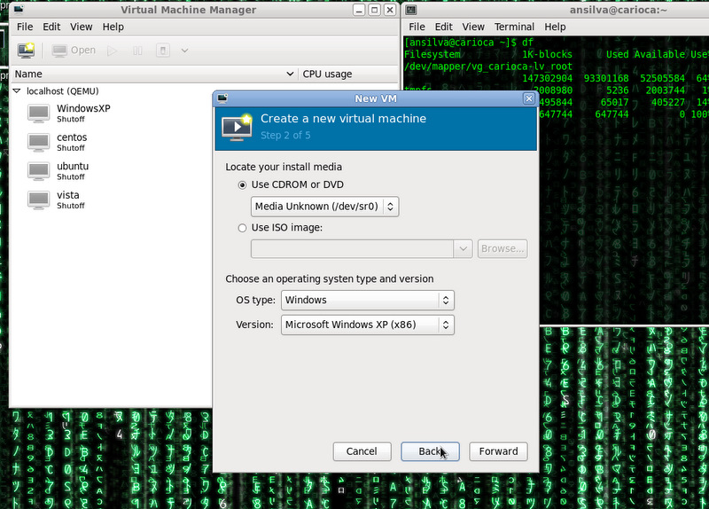
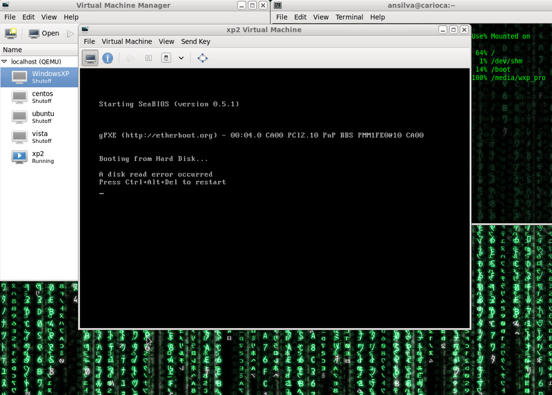
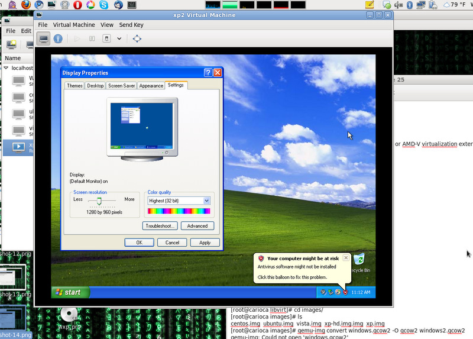
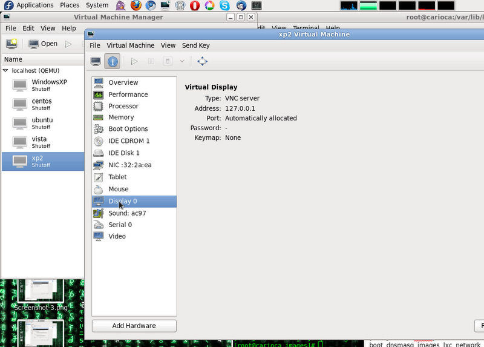
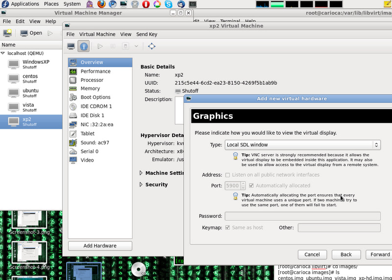
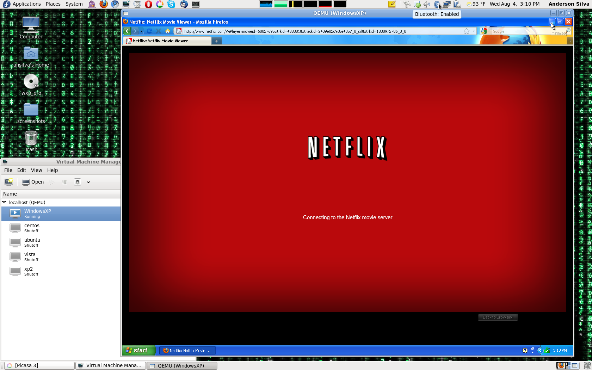

Common problems when trying to install Windows on KVM with virt-manager
Let me start with a very basic question: why, oh why, would anybody want to run
Windows on their Linux workstation? A web developer could argue that they need a
way to test their applications on multiple versions of Internet Explorer. A
system administrator could argue that they need a sandbox to test an email client
like Outlook, or play around with integrating a Windows workstation into their
network. In my case, I want a Windows virtual machine on my laptop because I
want to be able to watch movies on Netflix. 
If you are not familiar with KVM, I would recommend that you take a look at the following guides before you read these tips:
- If you are running Fedora: http://docs.fedoraproject.org/en-US/Fedora/13/html/Virtualization_Guide/
- If you are running Ubuntu: https://help.ubuntu.com/community/KVM
The following is a set of tips and quick fixes I've collected over the last few months to get a Windows XP installation working under KVM being managed by virt-manager. Some of these tips will work for other versions of Windows, as well as for other Linux distributions other than Fedora 13 (my current distribution).
Tip #1
Before you even install the KVM, libvirt, and virt-manager packages, check your BIOS setting. Some computers, like Intel-based Lenovo Thinkpads, have a 'Intel (R) Virtualization Technology' option turned off. You must turn that on for virtualization to work.
Tip #2:
Set selinux to permissive mode, or turn it off completely.
To do this: edit /etc/selinux/config and change the SELINUX parameter.
Tip #3:
If you are going to install Windows from a CD/DVD (instead of an ISO file), make sure that the user which you are running virt-manager as, has read access to the optical drive device on your system. Otherwise, virt-manager may not let you select your drive as an install media location.

Tip #4:
During the installation of Windows XP (as far as I know it doesn't happen with Vista or 7), the error "A disk read error occurred" shows up during boot time, not allowing you to complete the installation. The problem here is that for whatever reason, virt-manager by default creates disk images using the raw format, and the Windows XP installer does not like that format. The solution is to convert your disk image to qcow2 format.

To convert your existing image:
cd /var/lib/libvirt/images/ # or whatever other location you keep your images at qemu-img xp.img -O qcow2 xp-qcow2.img
Note 1: You may have to start the installation process again, and re-format the disk, after converting the image to qcow2 format.
Note 2: Under Fedora 13, I've tried creating qcow2 disk images before starting the installation via virt-manager, but I got the same "A disk read error occurred" problem.
Tip #5:
Once Windows is installed, if you are not able to increase the screen resolution of your virtual machine, check the virtual video driver that your virtual machine is using. If it is not the 'vga' model, change it, and re-start your virtual machine.

Tip #6:
This tip, for whatever reason, was the one that took me the longest to figure out. It took long not because it was a hard problem, but mostly because I was looking at it from the wrong angle. As I said in the beginning of this article, I wanted a Windows virtual machine on my laptop to watch movies, and even though I did get Windows installed, I could not get the sound working on it.
One of the most frequent answers I found on the web was about exporting the variable QEMU_AUDIO_DRV with different parameters to get the sound working correctly, but none of the parameters worked for me. I also read that at least in Fedora, vnc doesn't support audio, which basically meant that I needed to find another way to view my desktop. That's when I decided to shift gears and look at SDL instead of vnc.
To do that, the following must be done:

1. Remove the 'Display 0' property under Hardware Details, and add a new Graphic Device using 'Local SDL Window' instead of VNC Server.

2. Edit the /etc/libvirt/qemu.conf, and get qemu-kvm to run as your user:
user = "ansilva" group = "ansilva"
3. Restart libvirtd:
service libvirtd restart
Now, if you open up virt-manager, and start up your Windows virtual Machine, it should show up as a separate window outside the virt-manager GUI.

Conclusion
Hopefully, these six tips will be enough for you to get your Windows virtual machine running well enough under KVM and virt-manager, so you can do your work or even have your fun. I highly recommend that you also take a look at the command line tool virsh for managing your virtual machines, which could easily be the subject for an entire new article in the near future. Stay tuned.
| Share |

|
Talkback: Discuss this article with The Answer Gang
![[BIO]](../gx/authors/silva.jpg)
Anderson Silva works as an IT Release Engineer at Red Hat, Inc. He holds a BS in Computer Science from Liberty University, a MS in Information Systems from the University of Maine. He is a Red Hat Certified Architect and has authored several Linux based articles for publications like: Linux Gazette, Revista do Linux, and Red Hat Magazine. Anderson has been married to his High School sweetheart, Joanna (who helps him edit his articles before submission), for 11 years, and has 3 kids. When he is not working or writing, he enjoys photography, spending time with his family, road cycling, watching Formula 1 and Indycar races, and taking his boys karting,